Матеріали Дентсплай Сірона · журнал «ДентАрт» 2024 №3
Багатофункціональна полімеризаційна лампа: для інтелектуального робочого процесу під час пломбування
MULTIFUNCTIONAL CURING LIGHT: FOR A SMART WORKFLOW IN FILLING THERAPY
У своїй практиці в Бюлаху, де працюю вже 30 років, я спеціалізуюся на цифровій та естетичній стоматології. Встановлення композитних пломб – один із моїх стандартних методів лікування. Сьогодні з великими дефектами в клініку звертається менше пацієнтів, ніж це було раніше, бо пацієнти ретельніше доглядають за своїми зубами, а відтак мають невеликі дефекти, які лікують мінімально інвазивними методами.
Метод лікування залежить головним чином від розміру дефекту. Пріоритетом є якомога більше зберегти власних тканин зуба. Це означає, що первинне лікування, як правило, проводиться за допомогою композитів, а вторинне – за допомогою керамічних реставрацій (вкладки, часткові коронки).
У своїй практиці я використовую універсальний композитний матеріал для зубів фронтальних та бокових сегментів; концепції одного відтінку виявилися цінними, оскільки я маю невеликий вибір основних кольорів, за допомогою яких можу досягти різних відтінків завдяки ефекту хамелеона. Також використовую ці композити для адгезивної фіксації керамічних реставрацій – це вимагає певних зусиль, але клінічні результати ідеальні.
Полімеризація має вирішальне значення для успіху
При застосуванні пломбувальних матеріалів потрібно використовувати полімеризаційну лампу. Як свідчать дослідження, світлова полімеризація насправді є одним із ключових факторів якості виконання прямих і непрямих реставрацій.1,2 Комітет експертів розглянув цю тему шість років тому і оприлюднив свої результати в консенсусній заяві, яка містить основні рекомендації щодо придбання та використання полімеризаційної лампи.3 Експерти відзначили п'ять основних критеріїв: випробування якості агрегатів незалежними установами, інтенсивність світла, профіль променя та активний діаметр полімеризації як ключові параметри, а також оптимальний час полімеризації.
Тривалість затвердіння справді є дуже важливим фактором. Коли виробники полімеризаційних ламп говорять про п'ятисекундний час полімеризації, я ставлюся скептично, тому що цикли від 10 до 20 секунд є типовими для стоматології. Однак для деяких матеріалів потрібно близько 40 секунд полімеризації.2 Точний час зрештою залежить від використовуваного композитного матеріалу, розміру та глибини поверхні, що підлягає світловій полімеризації. Тому дуже важливим є те, щоб світильники були гнучкими в цьому плані.
Тренд до багатофункціональності
На мій погляд, відмінності між полімеризаційними лампами вже не є досить значними, але все частіше з'являється нова тенденція: полімеризаційні лампи можуть робити більше, ніж просто полімеризувати.
Одним із прикладів цього є полімеризаційна лампа SmartLite® Pro від Dentsply Sirona, яку можна придбати з додатковим датчиком для виявлення карієсу. Це дуже корисна функція, особливо при лікуванні карієсу методом пломбування, вона доповнює результати рентгенологічного дослідження. Технологія трансілюмінації, яка застосовується в датчику, може бути додатковим діагностичним засобом для діагностики карієсу на апроксимальних та оклюзійних поверхнях, виявлення зубного каменю, оцінки знебарвлених країв композитних пломб та фрактури зубів.4
У моїй практиці є обидві насадки SmartLite® Pro для тестування. Перше, на що звертаєш увагу, – це привабливий дизайн. Полімеризаційну лампу зручно тримати, а насадки дуже легко міняти.
Інтенсивність світла 1250 мВт/см перебуває в середньому діапазоні потрібної інтенсивності від 1000 до 1500 мВт/см. Дуже важливо, щоб полімеризаційне світло мало однорідний профіль променя, щоб світло рівномірно подавалося на всі ділянки. Це гарантує, що інтенсивність променя досягає не лише центру, але й усієї ділянки, яку слід заполімеризувати. Користувачі отримують дві батареї з полімеризаційною лампою, які можна заряджати окремо в зарядній станції. Використана технологія забезпечує швидку зарядку та високу ємність. Однією з нових функцій є радіометр, фотоелемент, який вбудований у зарядну базу і використовується для моніторингу продуктивності. Кольорові світлодіоди повідомляють користувачам, що лампа для полімеризації має достатнє випромінювання. SmartLite® Pro має цикли засвічування по 10 секунд. Цього, безперечно, достатньо для звичайної роботи – трохи більше гнучкості було б бонусом у моєму робочому процесі.
Клінічний випадок
У клініку звернулася пацієнтка, 32 роки, зі скаргами на пломби на зубах 24, 25, 26 (фото 1). Рентгенівське зображення показало, що під пломбами вже є патологічні зміни (фото 2). Використовуючи трансілюмінаційну насадку для виявлення карієсу SmartLite® Pro, я зміг добре візуалізувати початкову ситуацію. На рентгенівському знімку також чітко видно карієс, що розвинувся під пломбою зуба 24 (фото 3).
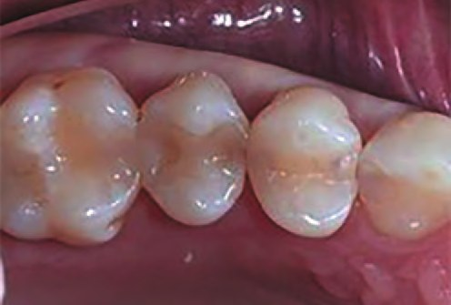
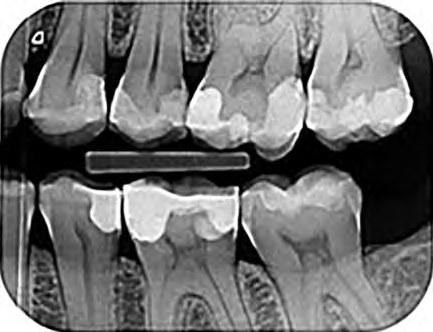
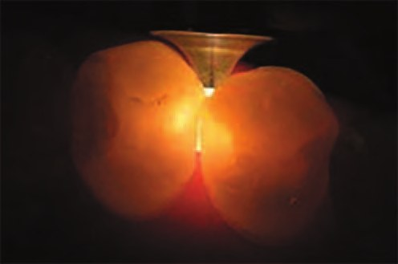
На описаному нижче клінічному прийомі лікували зуби 24 і 26. Обидва зуби препарували алмазним бором до повного видалення тканин, уражених карієсом (фото 4). Потім зроблено піскоструминну обробку, щоб ретельно очистити порожнини (фото 5 а і б).
Перед пломбуванням встановили секційні контурні матриці з гнучкими міжзубними клинами. Я використовував клини для адаптації матриць до зуба (фото 6). Після цього було зроблено протравлювання ортофосфорною кислотою (37 %) близько 15 секунд (фото 7) і нанесено адгезив (фото 8). Для полімеризації я вперше використав насадку для полімеризації SmartLite® Pro.
Після цього було внесено та адаптовано фотополімерний рентгеноконтрастний універсальний композит (фото 10); кожен шар полімеризувався протягом 10 секунд (фото 11).
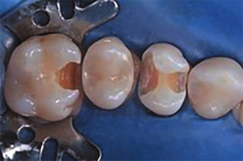
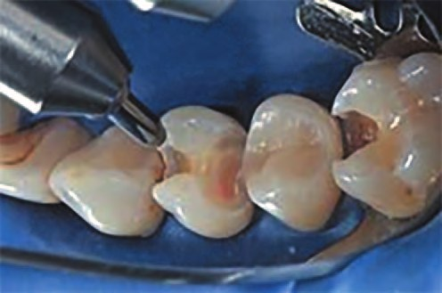
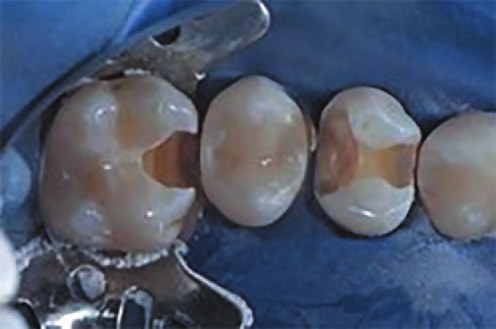
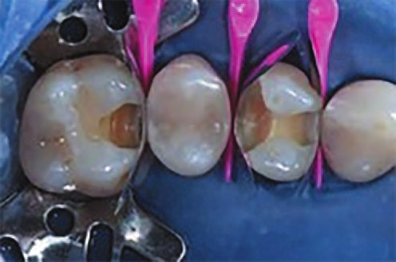
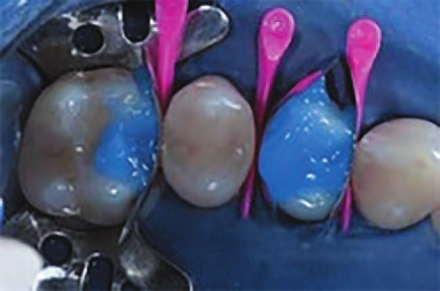
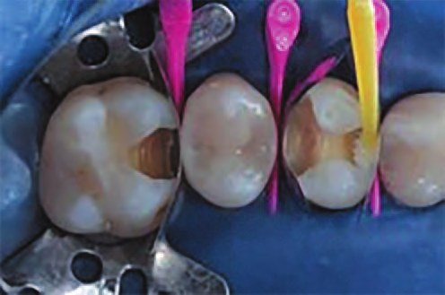
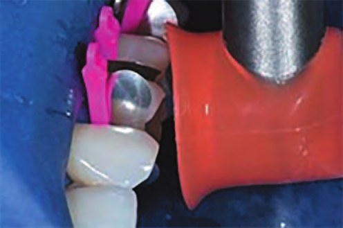
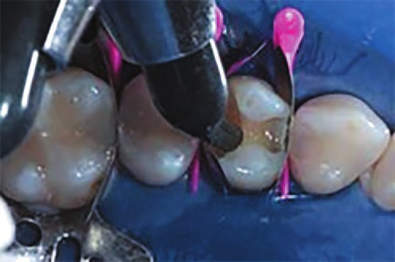
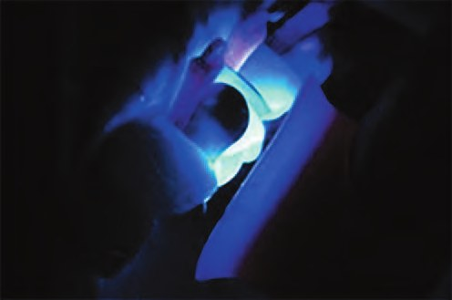
Видалено надлишок з проксимальної ділянки тонким диском Sof-Lex™ (ЗМ) (фото 12) і адаптовано оклюзійні контакти маленьким алмазним бором. Я також змінив контури пломбувального матеріалу, щоб надати природної форми (фото 13).
Після полірування результат був високоестетичним (фото 14 а і б).
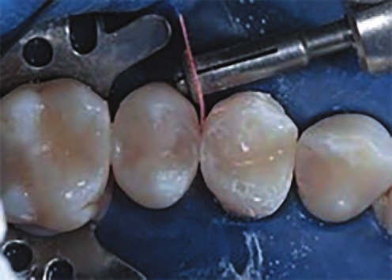
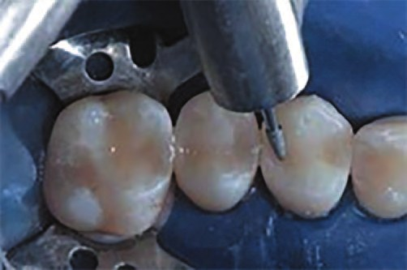
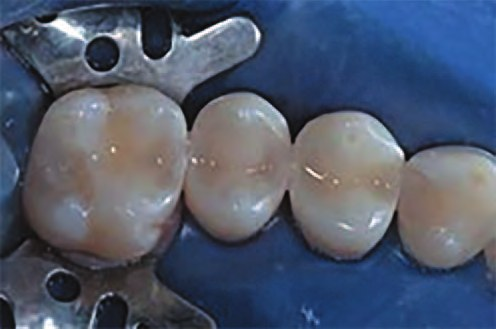
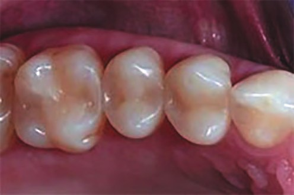
Висновки
SmartLite® Pro – це інноваційна полімеризаційна лампа, яка оптимально відповідає вимогам найсучаснішого лікування за допомогою пломб. Особливістю є те, що полімеризаційне світло охоплює весь зуб в цілому. Я використовую полімеризаційну лампу при встановленні пломб та адгезивній фіксації керамічних реставрацій. Насадка для виявлення карієсу дуже ефективна – окремий пристрій більше не потрібен.
Модульна концепція, початок якої ми бачимо тут, стане стандартом майбутнього, і нові розробки будуть захоплюючими.
Література
- Ilie N., et al. Lichtpolymerisation. ZWR – Das Deutsche Zahnärzteblatt 2016, 125. Jg., Nr. 06, S. 284–289.
- Ernst C. P. Augen auf beim Lampenkauf. ZMK 35(1-2) 2019:14–19.
- Roulet J. F., et al. Light curing – guidelines for practitioners – a consensus statement from the 2014 symposium on light curing in dentistry held at Dalhousie University, Halifax, Canada. J Adhes Dent 2014 Aug;16(4):303–4. doi: 10.3290/j.jad.a32610
- Strassler H. E., Pitel M. L. Using Fiber-Optic Transillumination as a Diagnostic Aid in Dental Practice. Compendium 2014, 35(2); https://www.aegisdentalnetwork.com/cced/2014/02/using-fiber-optic-transillumination-as-a-diagnostic-aid-in-dental-practice (retrieved on Mar. 15, 2020).